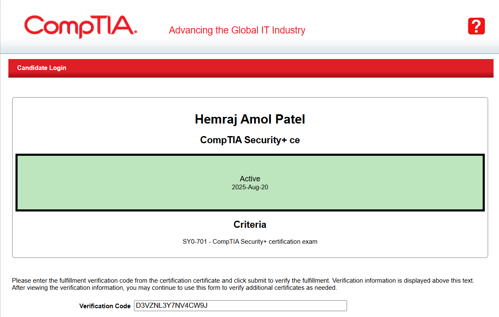
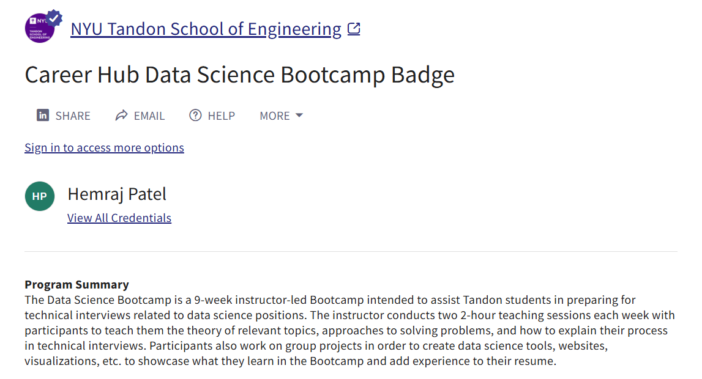

Hands-on experience across vulnerability management, SOC operations, penetration testing, and AI-driven threat research.
Researching AI-driven cyber threats and adversarial machine learning models, with a focus on data integrity, model poisoning, and system trustworthiness in cloud and emerging AI systems.
View detailsManaged Microsoft server administration, user account access, system troubleshooting, CMS/WordPress website updates, and secure faculty webpage maintenance for the NYU Economics Department.
View detailsDeployed and managed Nessus and OpenVAS across 300+ endpoints, remediating 500+ vulnerabilities and reducing high-severity risks by 40%. Built Python-based automation for patch management and CVE ingestion, integrating results into Splunk dashboards and MITRE ATT&CK-aligned workflows.
View detailsConducted vulnerability assessments and penetration tests using Burp Suite, Metasploit, and OWASP ZAP, identifying and remediating 100+ application vulnerabilities. Monitored SIEM alerts in Splunk and ELK, automated alert correlation, and reduced false positives by 28%.
View details
CompTIA
Mastercard / Forage

NYU Tandon School of Engineering
NYU Tandon School of Engineering